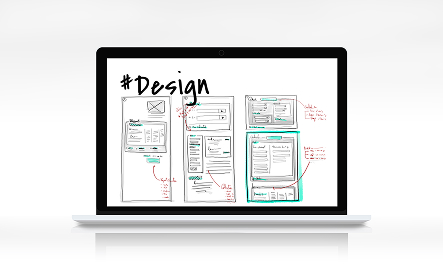
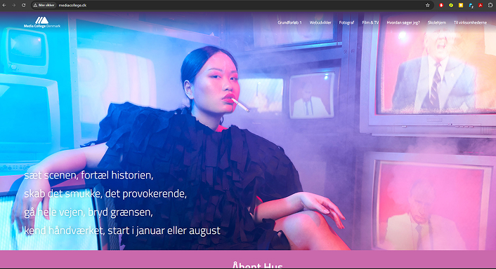

WEBUDVIKLER
WEBUDVIKLER


Start en karriere
hvor dine ideer
bliver til virkelighed
Det lærer du på uddannelsen

På webudvikler-uddannelsen lærer man mange forskellige færdigheder, som er nødvendige for at kunne udvikle og vedligeholde hjemmesider og webapplikationer. Først og fremmest lærer man programmering med sprog som HTML, CSS og Java Script, som bruges til at bygge og style hjemmesider samt gøre dem interaktive. Man lærer også backend-udvikling, hvor man arbejder med servere og databaser.
HTML
Bruges til at opbygge og strukturere indhold på hjemmesider. Det fungerer som "skelettet" for en webside ved at fortælle browseren, hvor der skal være overskrifter, tekst, billeder og links.
CSS
Definere det visuelle udseende og layout af hjemmesider, så som farver, skrifttype og skygger
JAVA SCRIPT
Bruges til at skabe interaktive og dynamiske funktioner på websider, såsom pop-op-vinduer, animationer og formulardata, der reagerer på brugerens input.